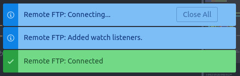

Le Café de l'IUT 1
Si l'envie vous prend de boire un petit café, vous serez peut-être intéressé-e d'apprendre qu'un expresso coûte seulement 25 centimes aux distributeurs situés dans le hall de l'IUT1 à quelque 50 mètres. En fait, à peu près toutes les boissons sont moins chères là-bas qu'à l'IUT2, et souvent meilleures.
Alors si vous vous demandez où aller, moi j'crois la question elle est vite répondue...

SSH avec panache
Le SSH c'est bien pratique, mais se taper le nom de domaine à rallonge de l'IUT à chaque fois, ça l'est moins.
Vous pouvez faire un alias bien sûr, mais ça ne vaut pas un bon script Bash comme celui-là!
Il vous suffit de le configurer une fois en remplaçant placeholder (ligne 4) par votre username, puis de rendre le fichier exécutable (chmod u+x ./transit) et de le mettre dans votre ~/.local/bin.
- Connexion classique :
transit
- Connexion vers un poste Linux particulier :
transit --jump num_salle num_machine
- Connexion graphique VNC :
transit --vnc num_salle num_machine
De toute façon, il y a un --help, vous le lisez n'est-ce pas?
L'emploi du temps à portée de main
Marre de devoir aller jusqu'au panneau d'affichage ou galérer avec ADE sur téléphone ? Heureusement, il existe d'autres moyens...
Le format ICS
C'est une fonctionnalité bien cachée de ADE, mais très utile : n'importe quel emploi du temps peut être exporté au format iCalendar (rien à voir avec l'appli d'Apple), un format ouvert supporté par bon nombre de logiciels.
Grâce à ça, vous pourrez voir votre emploi du temps directement dans votre agenda Google, Outlook, iCal (celui d'Apple cette fois) ou Thunderbird, ou même sur votre téléphone avec à peu près n'importe quelle appli Calendrier.
Mieux : l'export est synchronisable, donc si un cours est annulé par exemple, le changement sera reflété sur votre agenda sans avoir besoin de refaire la manip !
Explications détaillées ici
SFTP avec doigté
Vous avez la flemme de mettre en place sur votre PC un serveur Web, un SGBD ou un compilateur alors que tout marche déjà à l'IUT ?
Vous cherchez un moyen d'envoyer vos fichiers dans votre homedir sur Transit dès que vous les modifiez en local ?
Vous en avez marre de faire le transfert FileZilla à la main au moindre point-virgule ajouté ?
On a la solution, pour Windows et Linux !
Prérequis
Tout d'abord, vous aurez besoin de l'éditeur Atom, téléchargeable sur le site officiel ou, pour les Linuxiens, dans votre package manager.
(Si vous avez une méthode pour VSCode, Sublime ou d'autres éditeurs, n'hésitez pas à nous la transmettre sur Discord)
Vous devrez également copier depuis Transit sur votre machine le répertoire que vous voulez synchroniser.
Le package
Une fois Atom ouvert, rendez vous dans l'installeur de packages : accédez aux paramètres avec Ctrl + virgule puis choisissez la section Install.

Cherchez et installez le package "remote-ftp" (celui de "icetee")

Vous n'aurez à faire cette étape qu'une seule fois.
La configuration
Une fois le package installé, reste à le configurer correctement.
Tout d'abord, il faut ouvrir votre répertoire. Pour ça, rien de plus simple : File → Add Project Folder ou Ctrl+Maj+A
Ensuite, ouvrez le panneau de Remote FTP.
Pour ça, allez dans Packages → Remote FTP → Toggle.
Maintenant, il faut ouvrir le fichier de configuration.
Dans le panneau de gauche où vous voyez vos fichiers, choisissez l'onglet Remote. Si le panneau n'est pas visible, vous pouvez le déplier en cliquant sur la petite flèche qui apparaît sur le bord gauche de l'écran.

Choisissez Edit Configuration pour ouvrir le fichier de configuration de votre répertoire.
Ici, copiez la configuration ci-dessous en remplacant [login] par votre login et [chemin] par le chemin absolu de votre répertoire sur Transit.
Il peut s'obtenir via la commande pwd dans le shell ou dans un explorateur de fichier, et doit ressembler à /users/info/etu-s1/votrelogin/votrerépertoire
{
"protocol": "sftp",
"host": "transit.iut2.univ-grenoble-alpes.fr",
"port": 22,
"user": "[login]",
"pass": "pass",
"promptForPass": true,
"remote": "[chemin]",
"local": "",
"agent": "",
"privatekey": "",
"passphrase": "",
"hosthash": "",
"ignorehost": true,
"connTimeout": 10000,
"keepalive": 10000,
"keyboardInteractive": false,
"keyboardInteractiveForPass": false,
"remoteCommand": "",
"remoteShell": "",
"watch": [],
"watchTimeout": 500
}
N'oubliez pas de sauvegarder évidemment.
Vous devrez refaire cette étape pour chaque nouveau répertoire que vous voudrez synchroniser en SFTP.
La connexion
Dans le panneau Remote, cliquez sur Connect. Un pop-up devrait vous demander votre mot de passe. Si tout se passe bien, vous devriez avoir une notification de confirmation :

Vous travaillerez dans le panneau Project à gauche (pour créer, ouvrir, modifier des fichiers), et à chaque enregistrement, le répertoire correspondant dans votre homedir à l'IUT sera mis à jour.
Vous devrez refaire cette étape à chaque fois que vous réouvrirez ce répertoire avec Atom.